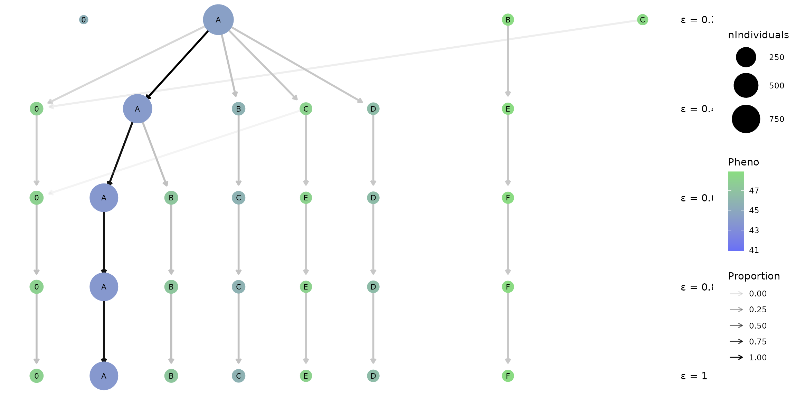
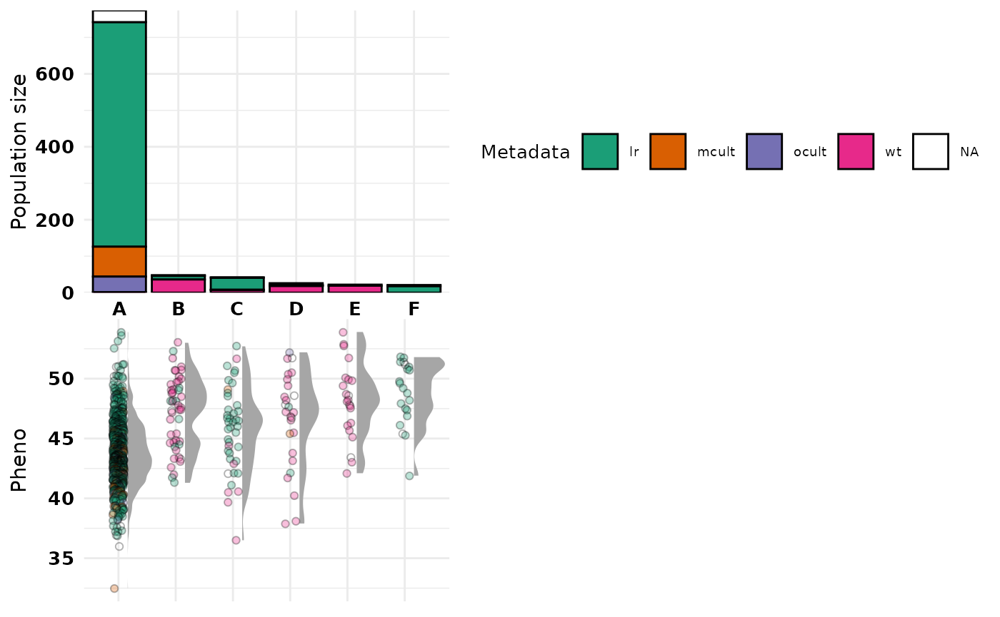

Getting started
Jacob Marsh
2023-03-05
Getting_started.RmdIntroduction
crosshap (R package) is an LD-based local haplotyping tool designed to visualize patterns of variation across loci and individuals in a genomic region of interest. In this tutorial we’ll walk through an example analysis that will help to introduce and describe the main functions of crosshap so you’ll be ready to jump into exploring your own data.
The data we’ll be analyzing is soybean data from the USDA core collection (Bayer et al. 2021). This tutorial will re-perform local haplotype analysis of the seed protein QTL, cqProt-003, with crosshap (Marsh et al. 2022). The data can be downloaded from the crosshap example data figshare repository.
install.packages("devtools")
devtools::install_github("jacobimarsh/crosshap")Preparing inputs
For all inputs a helper function is provided in crosshap to help read them in consistently. For this tutorial, you’ll need to download the crosshap example data and save it to a local directory.
#Read example data into R and standardize using helper functions
vcf <- read_vcf('path/to/fin_b51_173kb_only.vcf')
#VCF is provided as additional argument to help assign column and row names
LD <- read_LD('path/to/plink.ld', vcf = vcf)
pheno <- read_pheno('path/to/sprot_phen.txt')
metadata <- read_metadata('path/to/namepopfile.txt')VCF contains genomic variation (SNP) information of 985 accessions. Only sites within the 173kb trait associated region of interest are present in the VCF, along with header information labeling each individual.
How do I prepare my own VCF?
The data has been filtered and imputed; currently only biallelic variant sites are supported by crosshap. We suggest you filter your data prior to analysis, though imputation is optional and often it will be preferable to keep it unimputed. For more information on how best to isolate your region, take a look at vignette: Delimiting a region of interest.
head(vcf, c(4,11))
#> # A tibble: 4 × 11
#> `#CHROM` POS ID REF ALT QUAL FILTER INFO FORMAT SRR1533182 USB.129
#> <chr> <dbl> <chr> <chr> <chr> <chr> <chr> <chr> <chr> <chr> <chr>
#> 1 20 3.16e7 20_3… C A . PASS . GT 1|0 0|0
#> 2 20 3.16e7 20_3… C T . PASS . GT 0|0 0|0
#> 3 20 3.16e7 20_3… A G . PASS . GT 1|0 0|0
#> 4 20 3.16e7 20_3… C T . PASS . GT 0|0 0|0LD matrix provides pairwise linkage information between all SNP loci within the region of interest (173kb). Any LD metric that captures pairwise correlation on a scale from 0 (unlinked) to 1 (fully linked) may be used, including D’, R^2, or R^2 corrected for kinship or population structure. For this example, we are using R^2 values.
How do I prepare my own LD matrix?
The LD file must be a square correlation matrix using the same loci present in vcf, ordered by position, with or without position labels (vcf object must be provided if position labels are missing). A simple R^2 matrix can be calculated using PLINK (Purcell et al 2007) from which the output can be directly used as input:
$ plink --r2 square --vcf imputed_173kb.vcf
head(LD, c(4,4))
#> 20_31604185 20_31604420 20_31604498 20_31604889
#> 20_31604185 1.00 0.00 0.24 0.96
#> 20_31604420 0.00 1.00 0.29 0.00
#> 20_31604498 0.24 0.29 1.00 0.23
#> 20_31604889 0.96 0.00 0.23 1.00Phenotype scores for all, or at least some individuals in the VCF is necessary for uncovering trait-associated genomic variation and haplotypes. Given this tutorial analyzes a seed protein QTL, seed protein % is the phenotype provided for this example.
How do I prepare my own phenotype file?
The phenotype file should be a comma or tab-delimited plain text file with individual names (same as VCF IDs) in the first column, and numerical phenotype scores in the second column, either with columns untitled or labeled ‘Ind’ and ‘Pheno’. This can be the same phenotype file provided for a GWAS.
head(pheno, n = 4)
#> # A tibble: 4 × 2
#> Ind Pheno
#> <chr> <dbl>
#> 1 AB.01 44
#> 2 AB.02 50.5
#> 3 BR.24 43.9
#> 4 ESS 45.5Metadata grouping labels for distinct subpopulations in your dataset can aid in interpreting the haplotyping results. This example provides level of domestication for each individual, including undomesticated wild-type soy (wt), to domesticated landraces (lr), domesticated cultivars improved by advanced breeding (ocult) and further improved modern cultivars (mcult).
How do I prepare my own metadata file?
The metadata file should be formatted the exact same as the phenotype file, though with a categorical metadata grouping variable in the second column instead of numerical phenotype score. This variable can be anything you want to check the spread of across the haplotypes (e.g. geographic region), or that could be associated with phenotypic variation (e.g. year of collection). Metadata is an optional variable, though is highly recommended to include.
head(metadata, n = 4)
#> # A tibble: 4 × 2
#> Ind Metadata
#> <chr> <chr>
#> 1 AB.01 lr
#> 2 AB.02 lr
#> 3 BR.01 mcult
#> 4 BR.02 mcultLocal haplotyping
Local haplotyping involves classifying individuals by shared haplotypes (combinations of alleles) across loci within a region of interest. In crosshap, haplotypes are not defined by individual loci but rather by allelic combinations of Marker Groups. Marker Groups are clusters of tightly linked SNPs which are typically inherited as a unit throughout the population. For an explanatory visualization showing how Marker Group SNPs inform haplotyping with crosshap, take a look at our vignette: Haplotype UMAP GIF. The clustering algorithm used to capture Marker Groups is DBSCAN (Ester et al. 1996) which has two main parameters in crosshap: MGmin and epsilon.
MGmin (minPts) is the minimum number of linked SNPs in a cluster for it to be classified as a Marker Group instead of background noise. In this example (2041 SNPs in 173kb region), a MGmin of 30 was chosen.
#Add minimum Marker Group SNP count
MGmin <- 30Epsilon roughly translates to cluster density, when epsilon increases, more SNPs will typically be included in more Marker Groups. At this stage it’s worth providing a range of epsilons so you can pick the best one later. This dataset has a lot of SNPs (2041 loci), so the range of epsilons we will test will be quite low (0.2 - 1).
#Add list of epsilon values to run haplotyping on
epsilon <- c(0.2,0.4,0.6,0.8,1)Now you’ve got all your inputs and parameters ready, it’s time to run the haplotyping!
#Run the haplotyping at all provided epsilon values
HapObject <- run_haplotyping(vcf = vcf,
LD = LD,
pheno = pheno,
metadata = metadata,
epsilon = epsilon,
MGmin = MGmin)If everything went to plan, a haplotype object should have been saved
in HapObject
with haplotyping results for all five provided epsilon values. This
haplotype object will be needed to build the crosshap visualizations
(along with a chosen epsilon to visualize!).
How should I tune MGmin and epsilon for my dataset?
The MGmin value should be set based on the size, density and linkage decay of your dataset. To give some scale: A 300kb region with 3000 SNPs may be appropriately captured with a MGmin in the range of 20-40, depending on the desired granularity. In contrast, a 50kb region with 100 SNPs may work better with an MGmin of 5-15.
Your dataset may require increasing the epsilon range (e.g. to 1 - 3), as especially for populations with lower linkage, too few Marker Groups may be identified at the default range (0.2 - 1). If the Epsilon values are raised very high, clusters will begin merging and the number of distinct Marker Groups will decrease.Optimizing the clustering resolution
Epsilon is a notoriously difficult parameter to optimize for DBSCAN, the tool used to cluster SNPs into Marker Groups for haplotyping with crosshap. Thankfully, crosshap has a clustree (Zappia et al 2018) wrapper that summarizes the differences between the haplotype objects created at the different epsilon values to help you pick the best one.
The first clustering tree option provides a summary of changes in haplotype groups resolved at different epsilon values.
#Provide phenotype data and parameters used to create haplotype objects
#Add type = 'MG' to ensure it summarizes Marker Groups rather than haplotypes
hap_clustree <- clustree_viz(HapObject = HapObject,
type = 'hap')
hap_clustree
#{r clustree, fig.width = 12, fig.height = 6} #Phenotype data and parameters used to create haplotype objects #Add type = 'hap' to ensure it summarizes haplotypes rather than Marker Groups hap_clustree <- clustree_viz(HapObject, type = 'hap') hap_clustree #
What are the nodes and arrows on this plot?
Each row of nodes represents the different haplotypes (A-Z) idenfied at a specific epsilon resolution (reported on right). The size of each node indicates the frequency of individuals that possess a given haplotype and the colour reflects the mean phenotype score for that population of individuals. The ‘0’ node on the left represents the population of individuals that are not placed in a haplotype. The arrows between each row indicates that individuals in the upper haplotype node are present in the lower haplotype node, with the opacity reflecting the proportion of individuals.
What you may notice is that the number of haplotypes identified changes from three populations at epsilon = 0.2 to six populations at epsilon = 0.6, though remains constant with six haplotype populations as epsilon increases to 1. This is a good sign that the haplotypes identified at this epsilon range (0.6 - 1) are robust and effectively capture a distinct genetic structure across the population in our region of interest.
In addition, a range of colours are present for the rows of nodes corresponding to epsilons 0.6 - 1 which indicates there’s phenotypic diversity between a large haplotype A which on average has a low phenotype score (seed protein %), and smaller haplotypes such as E and F which on average have higher phenotype scores.
Given these factors, lets pick the smallest ‘stable’ epsilon value, 0.6, to investigate further with the full crosshap visualization.
What if I want to visualize changes between marker groups?
Some analyses will be more interested in the linked SNPs which may be
causal for phenotypic trait variation, or may be markers for causal
variants. In this case, picking a clustering resolution (epsilon) that
is optimal for capturing informative Marker Groups is the goal. The
clustree wrapper provided by crosshap has a MG option for capturing
changes between Marker Groups, rather than haplotypes, between results
using different epsilon values. When type = 'MG', the nodes
will instead represent Marker Groups, with size indicating number of
SNPs, and colour reflecting the phenotypic association of a given Marker
Groups. The ‘0’ group represents background SNPs that aren’t assigned to
a Marker Group.
#Provide phenotype data and parameters used to create haplotype objects
#Add type = 'MG' to ensure it summarizes Marker Groups rather than haplotypes
MG_clustree <- clustree_viz(HapObject = HapObject,
type = 'MG')
MG_clustreeVisualizing local haplotypes
Now that we have our results ready as a haplotype object, and have picked the optimal epsilon resolution for our dataset, it’s time to visualize our results in full so we can start uncovering patterns of variation!
On the crosshap visualization, the central matrix displays the combinations of Marker Group alleles that define each haplotype, it provides a grid around which features of each Marker Group and haplotype combination is characterized. Features of haplotypes and the individuals assigned to them are visualized vertically, with features in the top and bottom plots. Features of Marker Groups and the SNPs assigned to them are visualized horizontally, with features on the left and right plots.
Why visualize Marker Groups alongside haplotypes?
The idea of the eponymous crosshap visualization is to integrate Marker Group results (cluster of SNPs) with features of haplotype populations (groups of genetically similar individuals), allowing you to intuitively connect genetic variants with the individuals that possess them. One of the reasons it’s important to capture both in the same figure is because often trends of genetic variation captured by Marker Groups can be explained by population structure across the haplotypes - and vice versa.
What exactly is shown in each section of the visualization?
Above the central matrix is the frequency of individuals with each haplotype combination, with a breakdown by our provided metadata variable (level of domestication).
Below the central matrix is plotted the phenotype scores (seed protein %) for each individual (each dot is an individual), grouped by haplotype and coloured by metadata variable, like the top bar plot.
Left of the central matrix is a summary of allele frequency information for each of the Marker Groups (MG). This indicates the frequency of minor allele, missing alleles, heterozygotes, and reference alleles averaged across all the SNPs within each Marker Group.
Right of the central matrix is plotted the phenotypic association for each SNP (each dot is a SNP), grouped by Marker Group. The ‘pheno association’ is effectively the difference in phenotype scores between individuals with the alternate compared to reference alleles for a given SNP.
The table in the bottom right summarizes the haplotype information and the table in the top right summarizes the Marker Group information. All guides are shown in the bottom left.
#Visualize haplotype object created by run_haplotyping() at the chosen epsilon (0.6)
Hap_viz <- crosshap_viz(HapObject = HapObject, epsilon = 0.6)
Hap_viz
#If it doesn't scale well in your plot viewer, try exporting it as an image with ggsave()Are there other options for these plots?
The left plot providing allele frequency information can be swapped out by providing the argumentplot_left = 'pos' to instead
report the chromosomal position of each SNP in the region of interest.
Similarly. the right plot providing phenotypic association results for
SNPs can be swapped using plot_right = 'cluster' to instead
build a boxplot which indicates the level of internal linkage within
each Marker Group.
Interpreting the crosshap visualization
Alright, lets use the integrated visualization to uncover some biological findings to put in that paper/report/grant application. Give it a crack yourself, and if you get stuck, have a look at the example findings below.
Level of domestication across haplotypes
Looking at the top bar plot and the summary table in the bottom right, haplotype A almost exclusively contains domesticated individuals including the vast majority of old and modern improved cultivars. Haplotypes B, D and E primarily contain wild-type individuals and haplotypes C and F appear landrace-specific.
Phenotypic variability across haplotypes
Looking at the bottom phenotype plot, individuals in haplotypes B-F (which share the alternate allele for MG1) typically have higher seed protein scores than individuals in haplotype A. This trend is not only found in the wild-type specific haplotypes (B,D,E) but also the landrace-specific haplotypes C and F indicating there are some domesticated subpopulations that may share a causal high-protein mutation in the region.
Linkage patterns between Marker Groups
By looking at the central MG/hap matrix, we can see that all other Marker Groups have ‘nested’ linkage to MG1, meaning the alternate alleles for MG2-MG9 SNPs tend to only be present when the alternate allele for MG1 is present. This may indicate a bottleneck, in this case due to artificial selection for a variant tightly linked to MG1, leading to dramatically reduced genetic variation in the major domesticated haplotype A.
Phenotypic association of Marker Groups
Looking at the pheno association plot on the right, several Marker Groups appear to be trait-associated, particularly MG1 and MG8. While MG8 is associated with the highest phenotypic effect (4.39), it has a low minor allele frequency (0.03; see left allele count plot). In contrast, MG1 has a substantially higher minor allele frequency (0.21), which means the phenotypic association for MG1 has more statistical power.
Candidates for further analysis and validation
MG1 is the strongest candidate Marker Groups for further analysis, it may be worth investigating the functional annotations of these markers to identify a candidate causal variant, or testing whether indels/structural variation is linked to MG1. MG8 is also a candidate for further analysis, though the alternate allele for MG8 is only found in 18 landrace individuals with very high seed protein scores. As a result, it may be fruitful to investigate the subpopulation of individuals in haplotype F: are they from the same geographic region? do they share any other unique biological features? These rare landrace individuals in haplotype F may be interesting germplasm for introgression studies.
Congratulations, you did your first crosshap analysis! Now you’re ready and equipped to give it a go with your data :)
Exporting raw results and individual plots
You can have a closer look at the saved results by looking at the elements within the haplotype object. This is ideal for exporting information about the individuals that possess each haplotype, and the SNPs within each Marker Group for further analysis.
- The Indfile reports the haplotype assigned to each individual
- The Hapfile reports the identified haplotypes, and their Marker Group combinations
- The Varfile reports information for each SNP, including Marker Group assignments
#Print first lines of haplotype object buckets for epsilon = 0.6 results.
HapObject$Haplotypes_MGmin30_E0.6$Indfile
HapObject$Haplotypes_MGmin30_E0.6$Hapfile
HapObject$Haplotypes_MGmin30_E0.6$VarfileIf you’re interested in a specific plot from the crosshap visualization, though don’t need the full integrated figure, you can build the plots one-by one and stitch them together as you like using the patchwork package in R (Pederson 2022).
Below we’ll only include the top and bottom plots that are relevant that characterize our haplotype populations.
#Install patchwork if you don't have it using install.packages("patchwork")
library(patchwork)
#First lets build the top plot, keeping the guides with "hide_labels = F"
top <- build_top_metaplot(HapObject = HapObject, epsilon = 0.6, hide_labels = F)
#Next lets build the bottom plot, hiding the guides with "hide_labels = T"
bot <- build_bot_halfeyeplot(HapObject = HapObject, epsilon = 0.6, hide_labels = T)
#Now we can stitch them together with patchwork!
hap_plots <- patchwork::wrap_plots(top, bot) + patchwork::plot_layout(ncol = 1)
hap_plots
References
BAYER, P. E., VALLIYODAN, B., HU, H., MARSH, J. I., YUAN, Y., VUONG,
T. D., PATIL, G., SONG, Q., BATLEY, J., VARSHNEY, R. K., LAM, H. M.,
EDWARDS, D. & NGUYEN, H. T. 2021. Sequencing the USDA core soybean
collection reveals gene loss during domestication and
breeding. Plant Genome, e20109.
MARSH, J. I., HU, H., PETEREIT, J., BAYER, P. E., VALLIYODAN, B., BATLEY, J., NGUYEN, H. T. & EDWARDS, D. 2022. Haplotype mapping uncovers unexplored variation in wild and domesticated soybean at the major protein locus cqProt-003. Theor Appl Genet, 135, 1443-1455.
PURCELL, S., NEALE, B., TODD-BROWN, K., THOMAS, L., FERREIRA, M. A. R., BENDER, D., MALLER, J., SKLAR, P., DE BAKKER, P. I. W., DALY, M. J. & SHAM, P. C. 2007. PLINK: A tool set for whole-genome association and population-based linkage analyses. Am J Hum Genet, 81, 559-575.
ESTER, M., KRIEGEL, H.-P., SANDER, J. & XU, X. A density-based algorithm for discovering clusters in large spatial databases with noise. Proceedings of the 2nd ACM International Conference on Knowledge Discovery and Data Mining (KDD), 1996. 226-231.
PEDERSON, T. 2022. Patchwork: The composer of plots.
https://patchwork.data-imaginist.com, https://github.com/thomasp85/patchwork.
ZAPPIA, L. & OSHLACK, A. 2018. Clustering trees: A visualization for evaluating clusterings at multiple resolutions. Gigascience, 7.